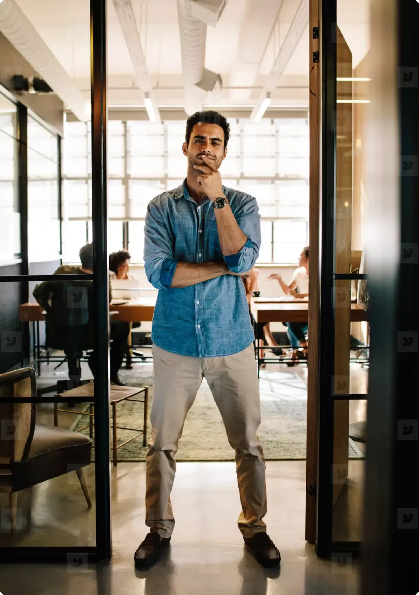

Art direction
Photography
Where imagery is the archetype, photography is the moment. Every photo sits at one of the three layers of our story — and obeys one rule of light before anything else.
Directional light. Always facing what's next.
Brand — outer layer.

and what's next.

a single spotlight.

the skyline.
Portraits
The professionals we frame.
Portraits are the close-up half of the brand layer. One person, one working moment, lit the same way as the wide frames — marketing, sales, business development, consultants and analysts.
the case.

the room.
the door.

the call.
Product — middle layer.
to polished.
handles itself.
every deck.
Content — inner layer.
Settings
Many settings, one way of seeing.
The light principle holds wherever the camera goes — a homepage hero, a careers page, a candid on the move, a press portrait. The setting changes; the directional light and the subject in focus never do.




Single subject, room to breathe. Eye line at the rule of thirds, never centered like a passport photo.
Directional and motivated — a window, a screen, a spotlight. Never flat, even fill. The subject sits in the light and faces it.
16:10 cinematic for brand. 4:3 for product. 3:4 portrait for content. One crop per layer, never mixed.
Wide in role, age, geography. We design for everyone whose week ends in a deck.